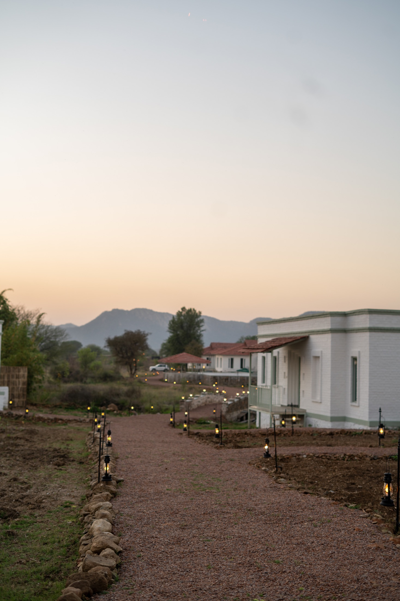
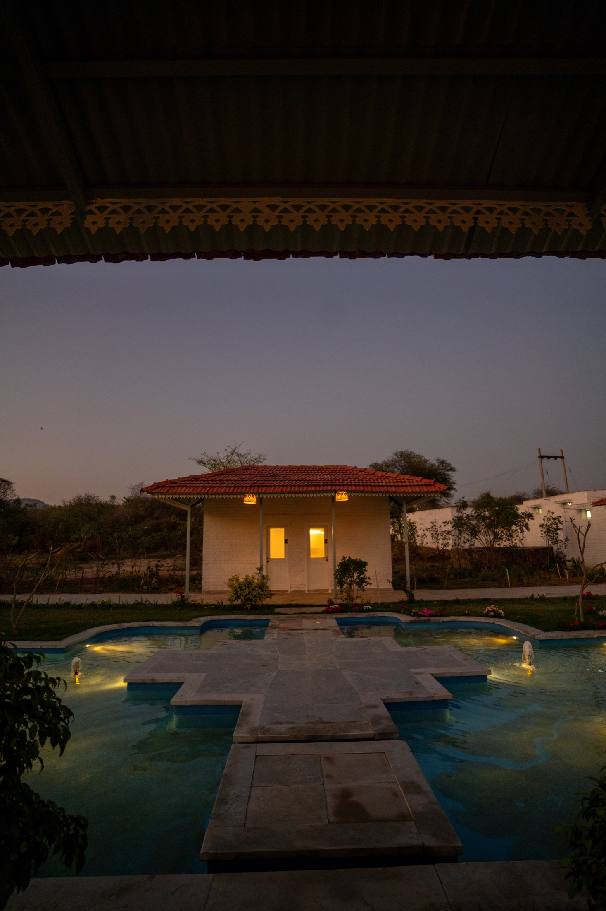
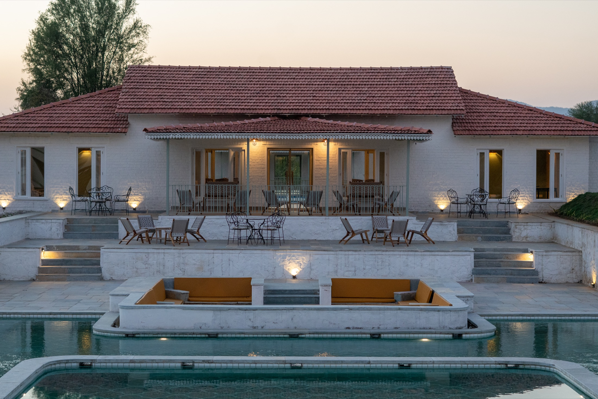

WildlifeReading the forest before a tiger appears
Alarm calls, langur movement, dust, and the long patience of a good naturalist.
Sariska Chronicles

WildlifeAlarm calls, langur movement, dust, and the long patience of a good naturalist.

HeritageHow old proportions and local materiality create a resort that breathes with climate.

DiningFire, millet, herbs, brass, and the intimate theatre of a private jungle table.